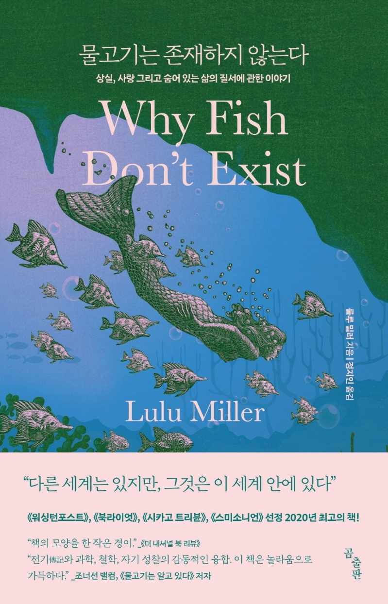

- 

⟨ ⟩
멋사의 독서기록장
⟨ ⟩
HiLion
안녕하세요. 김멋사입니다.
작별인사(김영하)
나는 그대로 거기 남았다. 그리고 공동체의 구성원들이 죽거나 사라지는 것을 끝까지 남아 지켜보았다. 오래지 않아 내 몸 여기저기에도 서서히 문제가 생기기 시작했지만 그대로 내버려두었다. 가끔은 바다에서 날아온 갈매기가 거기 앉아 무심한 표정으로 나를 내려다보곤 했다. 어느 날, 나는 오두막의 포치에서 주위를 둘러보았다. 공동체는 사라진 지 오래였다. 문득 이 넓은 대지에 인간을 닮은 존재는 이제 나 하나밖에 남지 않은 것 같다는 강렬한 확신이 들었다.
물고기는 존재하지 않는다(룰루밀러)
철학에는 어떤 것들이 이름을 얻기 전까지는 존재하지 않는다고 보는 사상이 있다. 이 사상은 정의, 향수, 무한, 사랑, 죄 같은 추상적인 개념들이 천상의 에테르적 차원에 머물면서 인간이 발견해 줄 때를 기다리고 있는 것이 아니라, 오히려 누군가가 그것들의 이름을 만들어 낼 때 비로소 존재하기 시작한다고 본다. 이름으로 불리는 순간 개념은 현실에 영향을 미칠 수 있다는 의미에서 '실재'가 된다. 우리는 전쟁, 휴전, 파산, 사랑, 순수, 죄책감을 선언할 수 있고, 그렇게 함으로써 사람들의 삶을 바꿔놓을 수 있다. 이렇듯 아이디어를 상상의 영역에서 세상의 영역으로 끌어오는 운송 수단인 이름 자체는 엄청난 힘을 가지고 있다. 그런데 이 사상에 따르면, 이름이 존재하기 전까지 개념들은 대체로 불활성 상태에 있다고 한다.
M 트레인(패티 스미스)
모든 건 꿈으로부터 시작되었다. 내가 이미 이야기했던 꿈. 아무것도 아닌 일에 대해 쓰는 건 쉽지 않지, 그는 말했고 그래서 나는 시작했다. 내가 좋아하는 종류의 도전이었기에 글을 쓰기 시작했다. 꿈은 소원을 낳고 여운으로 머무르는 질문을 낳는다. 작품을 어떻게 살아 있는 것으로 만드나? 작가는 어떻게 살아 있는 것을 독자의 손에 가져다놓는가? 말을 잃고 나는 뒤로 여행한다. 어쩌면 어디로 가고 있는가가 아니라 그냥 간다는 사실 자체가 중요한지 모른다.